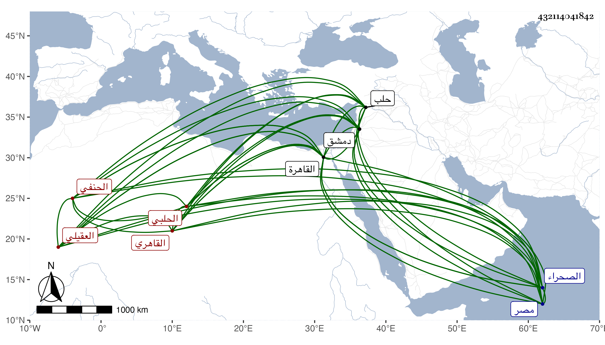

0902Sakhawi.DawLamic.ITO20230111-ara1.EIS1600.432114041842
Biography ID: 432114041842
631
محمد بن عمر بن إبرهيم بن محمد بن عمر بن عبد العزيز بن محمد بن أحمد بن هبة الله بن أبي جرادة ناصر الدين أبو غانم وأبو عبد الله بن الكمال أبي القسم وأبي حفص بن الجمال أبي إسحق العقيلي بالضم الحلبي ثم القاهري الحنفي ويعرف كسلفه بابن العديم وبابن أبي جرادة ، ولد في ربيع الأول سنة اثنتين وتسعين وسبعمائة بحلب وحفظ بها في صغره كتبا واشتغل على مشايخها كأبيه وأسمع على مسندها عمر بن أيدغمش وغيره ، وقدم القاهرة مع أبيه وهو شاب فشغله في فنون على غير واحد من الشيوخ كقاري الهداية وقرأ بنفسه على الزين العراقي قليلا من ألفيته ، ومات أبوه بعد رغبته له عن تدريس المنصورية ثم الشيخونية تصوفا وتدريسا ومباشرته لذلك في حياته وأوصاه أن لا يترك بعده المنصب ولو ذهب فيه جميع ما خلفه فقبل الوصية وبذل حتى استقر فيه قبل استكماله عشرين سنة في ثالث المحرم سنة اثنتي عشرة بعد الأمين الطرابلسي واستمر إلى أن سافر مع الناصر سنة مقتله فاتصل بالمؤيد حين حصره للناصر في دمشق فغضب منه الناصر فعزله وقرر أبا الوليد بن الشحنة الحلبي ولم يلبث أن قتل الناصر بحكم هذا قبل مباشرة المستقر بل ولا إرساله لمصر نائبا فأعيد الحاكم ثم صرف في جمادى الأولى سنة خمس عشرة بالصدر الأدمي قبل دخول المؤيد القاهرة وقبل تسلطنه وبذل حينئذ مالا حتى أعيدت إليه في رجبها مشيخة الشيخونية بعد صرف الأمين الطرابلسي ، ثم سافر للحج مستخلفا في التدريس شيخه قارئ الهداية وفي التصوف الشهاب بن سفري فوثب عليهما الشرف التباني وانتزعها منهما ثم أعيد إلى القضاء في رمضان التي تليها بعد موت ابن الأدمي واستمر حتى مات ، وكان خفيف اللحية يتوقد ذكاء سمحا بأوقاف الحنفية متساهلا في شأنها إجارة وبيعا حتى كادت تخرب بل لو دام قليلا خربت كلها ، كثير الوقيعة في العلماء قليل المبالاة بأمر الدين يكثر التظاهر بالمعاصي سيما الربا بل كان سيئ المعاملة جدا أحمق أهوج متهورا محبا في المزاح والفكاهة مثريا ذا حشم ومماليك فصيحا باللغة التركية وقد امتحن في الدولة الناصرية على يد الوزير سعد الدين البشيري وصودر مع كونه قاضيا . وبالجملة فكان من سيئات الدهر . مات قبل استكمال ثمان وعشرين سنة في ليلة السبت تاسع ربيع الآخر سنة تسع عشرة بعد أن كان ذعر من الطاعون الذي وقع فيها ذعرا شديدا وصار دأبه أن يستوصف ما يدفعه ويستكثر من ذلك أدعية ورقى وأدوية بل تمارض حتى لا يشهد ميتا ولا يدعى لجنازة لشدة خوفه من الموت فقدر الله سلامته من الطاعون وابتلاءه بالقولنج الصفراوي بحيث اشتد به الخطب وكان سبب موته ودفن بالصحراء بالقرب من جامع طشتمر حمص أخضر عفا الله عنه وإيانا . وذكره ابن تغري بردى وقال إنه كان زوج أخته وأن المقريزي رماه بعظائم ثم برئ منها وأنه أعلم بحاله منه ومن غيره كذا قال .
